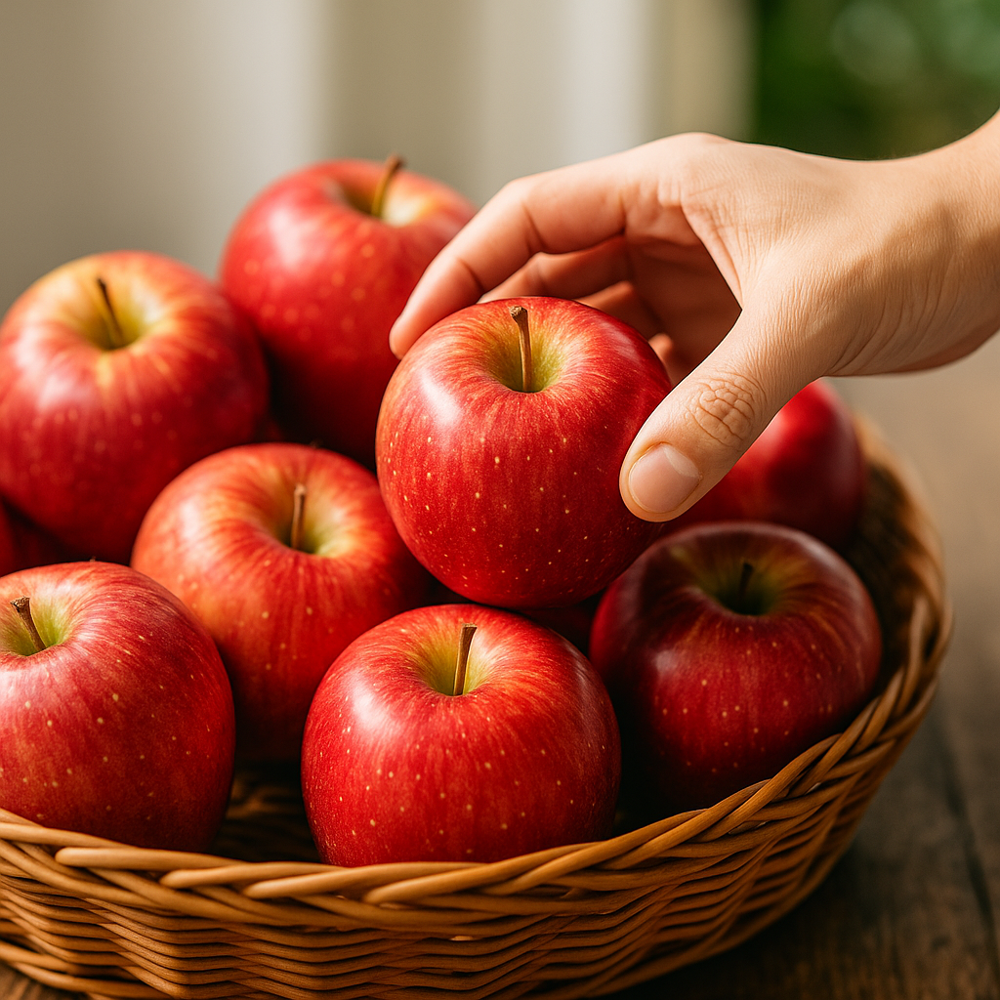

Tip rápido: manzanas listas
Cuando el color está uniforme y el aroma es fresco, tu Fuji está lista para comer. La firmeza debe ser alta, sin zonas blandas. Para conservarlas, guárdalas en el refrigerador dentro del cajón de frutas: asà prolongas su crocancia.
En tienda mostramos el precio por unidad y el código del producto tal como lo verás en la ficha; asà puedes identificarla fácil en la web.